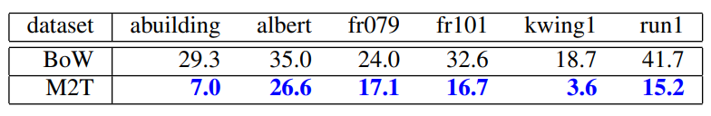

Abstract— Map matching, the ability to match a local map built by a mobile robot to previously built maps, is crucial in many robotic mapping, self-localization, and simultaneous localization and mapping (SLAM) applications. In this paper, we propose a solution to the “map-to-text (M2T)” problem, which involves the generation of text descriptions of local map content based on scene understanding to facilitate fast succinct text-based map matching. Unlike previous local feature approaches that trade discriminativity for viewpoint invariance, we develop a holistic view descriptor that is view-dependent and highly discriminative. Our approach is inspired by two independent observations: (1) The behavior of mobile robots given a local map can often be characterized by a unique viewpoint trajectory, and (2) a holistic view descriptor can be highly discriminative if the viewpoint is unique given the local map. Our method consists of three distinct steps: (1) First, an informative local map of the robot’s local surroundings is built. (2) Next, a unique viewpoint trajectory is planned in accordance with the given local map. (3) Finally, a synthetic view is described at the designated viewpoint. Because the success of our holistic view descriptor depends on the assumption that the viewpoint is unique given a local map, we also address the issue of viewpoint planning and present a solution that provides similar views for similar local maps. Consequently, we also propose a practical map-matching framework that combines the advantages of the fast succinct bag-of-words technique and the highly discriminative M2T holistic view descriptor. The results of experiments conducted using the publicly available radish dataset verify the efficacy of our proposed approach. Further, although this paper focuses on the standard 2D pointset map, we believe that our approach is sufficiently general to be applicable to a broad range of map formats, such as the 3D and general view-based maps.
Fig. 1. Local map descriptor. The top row shows four different places in the robot’s operating environment. The middle and bottom rows show two independent local maps built by the robot at different times throughout the day, each of which is warped into synthetic views by the proposed viewpoint planner. To facilitate visualization, the figure is shifted and rotated so that the viewpoint is placed at the center and the viewing direction is aligned with the upper direction of the figure. As can be seen, similar synthetic views are produced for similar local maps. Our method converts each view into a holistic view descriptor.
Fig. 2. Extraction of 2D polestar features from a 2D pointset map.
Fig. 3. Datasets used in the experiments: “abuilding,” “albert,” “fr079,” “run,” “fr101,” and “kwing” from the radish dataset [12].
Fig. 4. Examples of matching relevant pairs. Green and blue points indicate the query and the database maps, while the red lines indicate correspondence found by either method. To facilitate visualization, both maps are aligned w.r.t. the true viewpoints.
Fig. 5. Examples of matching irrelevant pairs.
Table1：SUMMARY OF ANR PERFORMANCE [%].
Fig. 6. ANR performance for each dataset (horizontal axis: sorted query map ID, vertical axis: ANR in [%]).
Fig. 7. Examples of matching M2T local map descriptors. (a) The local maps and the viewpoint trajectories. The top panel shows a collection of local maps (blue dots), the viewpoint trajectory (purple points), as well as the “unique” viewpoints planned by our framework (blue points). The bottom panel shows the sequence of planned viewpoints in the xyt space (t: viewpoint ID). (b) Matching M2T descriptors between a relevant map pair (first and second columns) and between an irrelevant map pair (third and fourth columns). The relevant and irrelevant pairs are also indicated by purple line segments in Fig. 7a. For each column, the matched visual words are highlighted in red. Each row shows from top to bottom, appearance word wa, pose words wx,wy, and the text description {⟨wx,wy,wa⟩}.